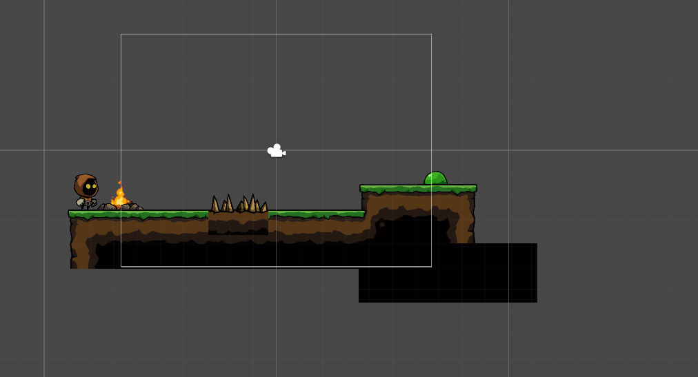
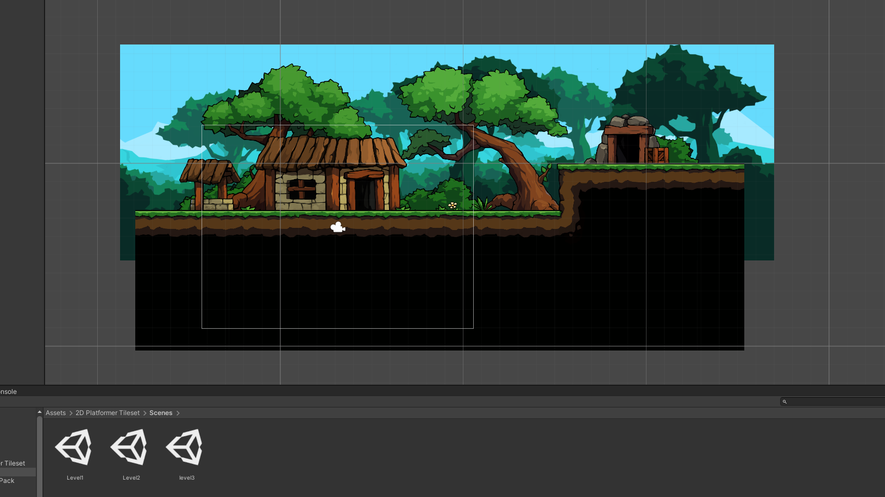
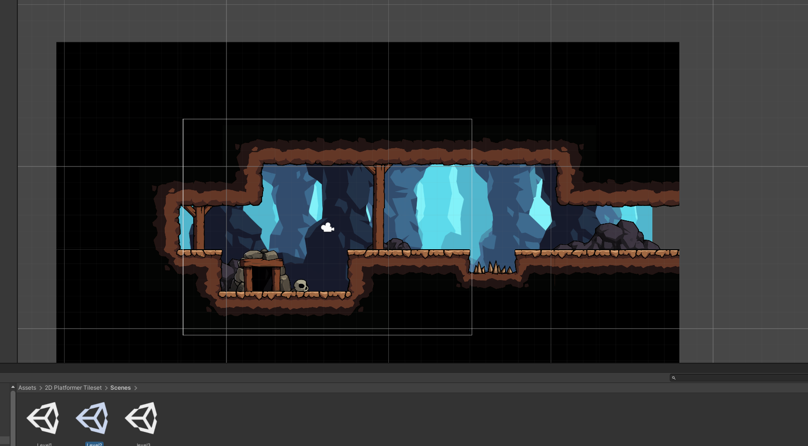
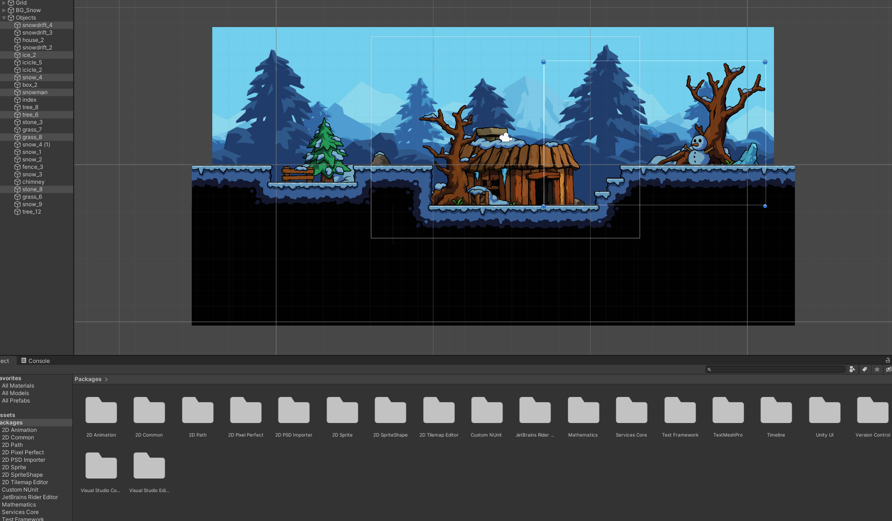

Das ist meine Webseite
mein erstes Projekt

Thats my First three levels i made the first Picture are my trial Map the last 3 are my final Maps
I got the Asstes from Unity Assets Store there are infinite possibilities
Its awesome to try out something new i hope it will get startet soon as a pre alpha version
i work as a nursing assistant for couple of years
Know i want to explain something new and the world of informatics are wonderfull for me
I could never have imagined that theres is so much to learn and explain
I hope i get used to it as soon as possible i want to learn i want to create something
Something big something great



